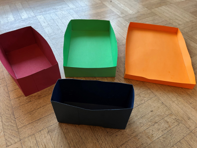

Optimierung unter einschränkenden Bedingungen: Modellieren, Zielfunktion bilden und Extremwerte im Sachkontext deuten.
6. Semester
Zur Übersicht Semester 6
· Gesamtübersicht
← Kosten- und Preistheorie
· Teil B →
Einstiegsbeispiel: Aus einem DIN-A4-Blatt werden an den vier Ecken Quadrate mit Seitenlänge \(x\) ausgeschnitten und die Seiten hochgefaltet. Gesucht ist jene Wahl von \(x\), bei der das Volumen der offenen Schachtel maximal wird.

Reales Anschauungsbeispiel: Schachteln aus Papier mit unterschiedlichen Ecklängen.
Applet-Links: Schachtel aus einem DIN-A4-Blatt · Kubische Funktionen: Offene Schachtel maximieren
Einstiegsmaterial: GeoGebra – Schachtel aus einem DIN-A4-Blatt.
Die Idee der Optimierung unter einschränkenden Bedingungen erklären und anhand der Modelle Hauptbedingung \(a\cdot b\) unter Nebenbedingung \(a+b=\mathrm{konst.}\) bzw. Hauptbedingung \(a+b\) unter Nebenbedingung \(a\cdot b=\mathrm{konst.}\) modellieren und berechnen.
Hauptbedingung, Nebenbedingung, Zielfunktion, Definitionsbereich, Maximum, Minimum.
Klicke dich durch die Schritte. Jeder Schritt erklärt dir den vollständigen Denkweg am konkreten DIN‑A4‑Beispiel.
Wir betrachten einen geschlossenen Drehzylinder (Radius \(r\), Höhe \(h\)) mit festem Volumen \(V=500\,\text{cm}^3\). Gesucht sind Maße mit minimaler Oberfläche \(O\) (Materialkosten).
Funktion: \(O(r)=2\pi r^2+\frac{1000}{r}\) für \(r>0\)
Ausgangssituation: Der Hund Elvis steht am Ufer und möchte auf schnellstem Weg einen Ball im Wasser erreichen. An Land läuft Elvis mit konstanter Geschwindigkeit \(v_L=3\,\mathrm{m/s}\), im Wasser schwimmt er mit \(v_W=1\,\mathrm{m/s}\).
Elvis kann nicht nur „direkt“ schwimmen, sondern zuerst ein Stück am Strand laufen und erst dann ins Wasser gehen. Genau dieser Einstiegspunkt wird mit der Variablen \(x\) beschrieben. Gesucht ist also jene Wahl von \(x\), bei der die Gesamtzeit aus Laufzeit und Schwimmzeit minimal wird.
\(t(x)=\frac{40-x}{3}+\sqrt{x^2+400}\), \(0\le x\le 40\)
Arbeitsauftrag: Löse mindestens 6 Aufgaben vollständig mit HB, NB, Zielfunktion, Ableitung, Definitionsbereich und Deutung.
Jede Lösung enthält: Modellansatz, Umformung, Zielfunktion, Extremwertrechnung und Deutung in ganzen Sätzen.
Zusätzliches Übungsmaterial zum Vertiefen:
Gemischte Aufgaben: Verständnis, Modellierung, Deutung und einzelne Rechenschritte.